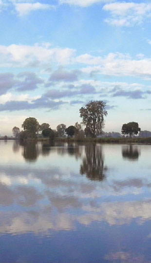

Individuele werk- en loopbaancoaching
"Wat dit traject bijzonder maakte, was de huiselijk en veilige sfeer waarin de gesprekken plaatsvonden. Soms zaten we samen in de tuin, maakten we een wandeling over de dijk of voerden we gesprekken aan de eettafel. Nathalie's kennis van de antropologie en psychologie gaf mij waardevolle inzichten. Nathalie, dankjewel voor het afgelopen jaar. Je bent een fijn en mooi mens!"
Wouter Mondeel
Assistent manager Commercieel, MONUTA
Individuele coaching
"Vanuit rust, eigen ervaringen en passie voor haar vak kon zij mij, al lopend in het zonnetje over de dijk, attenderen op de dingen die ik zo belangrijk vind. En door steeds aan te geven dat kiezen voor jezelf juist goed is, durfde ik weer rechtop te staan en grenzen aan te geven voor mezelf!"
Ilona Van de Louw
Backoffice medewerker, Hogeschool Arnhem-Nijmegen
Teamcoaching en individuele coaching (Latifa leerweg)
"Ik was onder de indruk van de manier waarop zij een veilige sfeer creëerde, maar ook meteen tot de kern van de zaak wist te komen. En dat op een ontspannen manier, met enige humor terwijl het tegelijkertijd wel echt ergens over gaat. Nathalie is heel betrokken, maar laat je wel zelf je pad lopen."
Floor Mooij
Teamleider inburgering, Vluchtelingenwerk Oost Nederland
Gastverblijf en Goed Gesprek (G&G)
"Al een aantal malen heb ik in dit warme, knusse huisje mogen logeren, het voelt als thuis. De heerlijke omgeving draagt daar aan bij: de grote bomen, de wolkenluchten boven de rivier. Met Nathalie heb ik weer een goed gesprek gehad, wij beginnen ergens en komen vlot tot de kern."
Teatske vd Zijpp
Praktijkondersteuner Huisarts Ouderen, Amsterdam
Coaching als onderdeel van een opleiding
"Elk coachingsgesprek is een feestje en ik kom altijd geïnspireerd weer thuis. Ze zet je aan het denken, prikkelt je om jezelf uit te dagen en laat je zien dat je het vermogen tot veranderen in je draagt."
Joyce Kuijpers
Kinder-, jeugd- en gezinscoach in opleiding, Breda
Individuele coaching
"Al wandelend gingen wij samen over de dijk. Tijdens onze gesprekken liet je me alle ruimte en stelde je me de juiste vragen. Je gaf me alle vrijheid om mezelf te kunnen zijn zonder te oordelen."
Hans Verdonschot
Leerkracht basisonderwijs